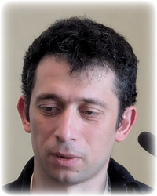

BPF loop verification with scalar evolution
The BPF verifier has, in the course of wrestling with the difficult problem of statically analyzing loops, grown special support for many kinds of loops over its history, but its fundamental approach to simple for loops has not changed. When it encounters a loop, it evaluates it, iteration by iteration, until reaching an exit condition — a process that can cause the verifier to mistakenly hit the limit on the number of allowed instructions where a better implementation would not. Eduard Zingerman spoke at the 2026 Linux Storage, Filesystem, Memory-Management, and BPF Summit about his in-progress work on improving the verifier's treatment of loops, especially nested loops.
His ultimate goal, as explained in his slides, is to enable the verifier to handle typical for and while loops in a single pass, without needing to iterate over the loop. To accomplish this, he plans to use a technique called scalar evolution to calculate the range of values that variables can possibly take on inside the loop, and then check whether the loop body is safe with the values in that range.
Of course, BPF bytecode does not retain the convenient labeling of loops that the C source code has; the first step of Zingerman's analysis is to detect where loops are by looking for backward jumps. This analysis is complicated by the fact that loops can be nested, and by the fact that his code needs to identify several different parts of the loop.

A loop is made up of a header, back edge, latch, and exit, he explained. The header sets up entry into the loop, the back edge jumps backward to begin the next iteration, the latch controls whether the loop continues or terminates, and the exit handles the code leaving the loop. Sometimes, a loop can have multiple headers. These are called irreducible loops, and pose a problem for many kinds of analysis. Luckily, they're fairly rare in non-pathological code, Zingerman said.
In order to identify these parts of loops, his prototype code builds up a dominator tree — a data structure that records which instructions are always executed before which other instructions, regardless of the control flow that happens between them. In the example code below, label A is said to dominate label B, because A always happens before B, even though there is code involving a conditional jump between them.
A: foo();
if (bar()) {
...
} else {
...
}
B: baz();
Starting from a loop's back edge, his code walks up the dominator tree to find a conditional jump that leads out of the loop. The condition of that jump is the loop's latch, since it controls whether the loop is exited.
Once a loop's latch has been identified, the code looks at the registers involved in computing the latch's condition, and can often infer a maximum number of times that the loop can execute. Nested loops are processed from innermost to outermost, to avoid complicating the logic needed to place a bound on the number of loop iterations.
John Fastabend thought that there were many loops where an inner loop changes an outer loop's variables, and that this would cause problems with Zingerman's innermost-to-outermost evaluation of loops. Zingerman agreed that this was a problem, but said that he had an unimplemented solution for it in mind.
Finding how many times a loop can execute is only half the battle, however. The code still needs to calculate the values that the variables involved in the loop can take on. In general, that is a complex task. In a majority of cases, however, the changes made to a variable in a loop are simple. For example, consider a loop that adds four to a variable every iteration. The value of the variable is always four times the loop iteration plus its starting value.
Zingerman's code identifies these kinds of relationships by symbolically executing the loop body, and finding those variables that, on every control-flow path, return to the header with the same symbolic value. Once this analysis is done, the verifier can take the possible ranges of those variables into account when analyzing the loop body.
Zingerman has considered two alternatives. Currently, the fact that not all variables can be handled by this approach means that the verifier will sometimes have to explore a large number of potential exits from the loop. That could be fixed by only using his scalar-evolution technique when all of the loop variables can be inferred in this way, and falling back to iteration-by-iteration exploration for other cases. Alternatively, the variables that can't be handled could have their existing inferred information thrown away, forcing the verifier to consider all possible values inside the loop. That would let the verifier handle all loops in one pass, no matter how complicated, but might require redundant bounds checks inside the loop that could, in theory, be omitted. Currently, the programmer would have to add those bounds checks, but if Alexei Starovoitov's plans for the future of BPF come to fruition, the verifier might be changed to add those bounds checks itself. Fastabend and Starovoitov were supportive of the second option.
There are other limitations of the current prototype that don't come from the approach. Right now, the code doesn't handle registers that are spilled to or restored from the stack, for example. Fastabend suggested that one way to handle that would be to create an infinite stack of registers for use during the symbolic-execution path. Zingerman said that he had considered the technique, but wanted to try a simpler approach first. As long as the loop's iterator isn't spilled to the stack, which is fairly rare with LLVM, it doesn't cause too many problems.
So far, his code has caused some improvements and some regressions. Those regressions are likely bugs, he said, but there may be some unexpected interactions with other parts of the verifier to track down. Fastabend asked how the changes impacted the time it takes to load a BPF program. Zingerman hasn't made rigorous measurements, but said that it shouldn't add much.
Starovoitov said that the static stack-liveness analysis that was added to the verifier a while ago was initially a source of worry, because it added an extra five passes and a ton of extra work. When measured, the end result was faster load times and lower memory usage. The time the verifier takes to load a BPF program is dominated by the main verifier pass, he explained, and basically anything that causes that to do less work will be a performance improvement.
That marked the end of the session, but the work will continue. Zingerman does have more plans for improvements to the scalar-evolution pass. If all goes according to plan, it should support stack manipulations, signed integer operations, and more complicated loops before it is proposed for addition to the kernel.
| Index entries for this article | |
|---|---|
| Kernel | BPF |
| Conference | Storage, Filesystem, Memory-Management and BPF Summit/2026 |
Posted Jun 10, 2026 1:23 UTC (Wed)
by foom (subscriber, #14868)
[Link] (1 responses)
Posted Jun 24, 2026 18:19 UTC (Wed)
by sammythesnake (guest, #17693)
[Link]
Why is there so much time & effort spent trying to reconstruct (i.e. *guess*) high level[1] stuff like for loops rather than have the semantics available on the original code available to the verifier - perhaps represented in the bytecode? Having a couple of codes that represent standard loops, or even more general iterators seems like a no brainer to my uninformed mind.
Why is having this whole (increasingly complex and hairy) verification process *in kernel* so important? Some means o for an administrator to sign a BPF as "safe" again seems utterly sensible to me. Keep all the complexity out of kernel space, and the verification can be done once instead of every time the program is loaded. If an admin wants to miss the point by signing unsafe BPF programs, let them keep the pieces!
The verifier could even evolve separately from the kernel - a new, updated verifier could certify programs to run on a kernel that predates the latest improvements & bug fixes, for example. The admin could set policy requiring a certain version of the verifier separately from the kernel version, perhaps.
If *signing* isn't acceptable, perhaps there's some way for a more sophisticated user-space verifier to add something like a zero knowledge proof. The verifier could potentially *check* the safety claim more quickly/safely than it can be produced. An external verifier wouldn't need to be restricted by kernel resources etc. It could be aided by access to the source code, it could add invariant hints to the bytecode, simplifying the proof, making it tractible to a stripped down in-kernel verifier.
I see so many possibilities that the current approach seems to run screaming away from!
Presumably there are some really persuasive reasons why nothing I've thought of is sane, but nothing comes to mind for me...
[1] ...for sufficiently trivial definitions of "high level"
Is this actually safe?
Is this actually safe?